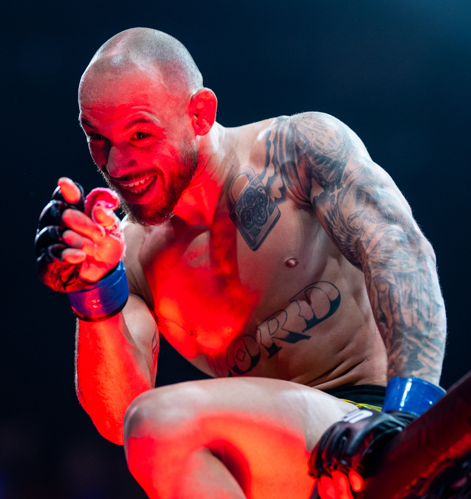

O Noche UFC chega à quarta edição com Jean Silva no centro das atenções. O brasileiro enfrenta o norte-americano Miguel Delgado na luta principal do card, no Desert Diamond Arena, em Glendale, no Arizona.
O confronto será válido pelo peso-pena e coloca frente a frente dois atletas que construíram boa parte de suas carreiras profissionais buscando esse tipo de luta. Jean chega com um cartel de 17 vitórias e três derrotas, sendo 12 por nocaute ou nocaute técnico e três por finalização.
Além da luta principal, o Noche UFC 2026 reúne nomes conhecidos do público, como os ex-campeões Brandon Moreno e Alexa Grasso, além de Manon Fiorot e dos pesos-pesados Waldo Cortes-Acosta e Curtis Blaydes.
Para o público brasileiro, há ainda uma segunda atração nacional: Djorden Santos enfrenta Yousri Belgaroui no card preliminar.
Jean Silva volta ao Noche UFC como protagonista
Conhecido como “Lord”, ele chega ao evento aos 29 anos e representando a equipe Fighting Nerds. O brasileiro fará novamente uma luta de destaque no Noche UFC, competição em que enfrentou Diego Lopes em setembro de 2025.
Naquela ocasião, Jean sofreu sua primeira derrota dentro da organização, sendo superado no segundo round. O resultado interrompeu uma sequência na qual o brasileiro havia vencido seus cinco primeiros adversários no Ultimate.
A recuperação aconteceu em 24 de janeiro de 2026. Diante do inglês Arnold Allen, Jean venceu por decisão unânime depois de três rounds e voltou ao caminho das vitórias.
A trajetória do brasileiro no UFC começou em janeiro de 2024, contra Westin Wilson. Depois vieram vitórias sobre Charles Jourdain, Drew Dober, Melsik Baghdasaryan e Bryce Mitchell. Contra Mitchell, Jean mostrou também seu repertório no jogo de chão ao conquistar uma finalização no segundo round.
Com a vitória sobre Arnold Allen, Jean passou a somar seis triunfos em sete apresentações no UFC antes do duelo contra Delgado.
Mudança de adversário alterou a luta principal
Jose Delgado não era o adversário inicialmente previsto para Jean Silva. O brasileiro estava escalado para enfrentar Yair Rodriguez no Noche UFC, mas o mexicano deixou o confronto e Delgado foi escolhido como substituto.
A alteração mudou bastante o contexto do combate. Em vez de enfrentar um nome já consolidado há anos no peso-pena, Jean encara um adversário em ascensão que terá a oportunidade de realizar uma luta de enorme exposição justamente no Arizona.
Delgado tem 28 anos, compete pelo MMA Lab e apresenta um cartel profissional de 12 vitórias e duas derrotas.
Sua passagem pelo UFC começou com vitória por nocaute sobre Connor Matthews em fevereiro de 2025. Na apresentação seguinte, Delgado precisou de apenas 26 segundos para nocautear Hyder Amil.
A primeira derrota no Ultimate aconteceu contra Nathaniel Wood, por decisão unânime, em outubro de 2025. Em 2026, Delgado respondeu com duas vitórias consecutivas: superou Andre Fili por decisão dividida em março e Austin Bashi por decisão unânime em julho.
Assim, chega ao duelo com Jean Silva depois de vencer quatro de suas cinco lutas no UFC.
Estilos de alta capacidade de definição
Os números das carreiras ajudam a explicar o interesse pelo combate principal.
Jean Silva tem 12 vitórias por nocaute ou nocaute técnico, três por finalização e apenas duas por decisão. Delgado soma seis nocautes ou nocautes técnicos, quatro finalizações e dois triunfos nas papeletas dos juízes.
Isso não permite prever como a luta terminará, mas mostra que os dois construíram a maior parte das respectivas vitórias sem depender de decisão.
Para Jean, o duelo representa a possibilidade de ampliar a sequência iniciada contra Arnold Allen e continuar avançando no cenário do peso-pena. Para Delgado, vencer um brasileiro que já enfrentou nomes de grande repercussão, significaria adicionar o adversário de maior projeção de sua trajetória no UFC até aqui.
O vencedor se aproxima da disputa pelo cinturão dos penas
O duelo também ganha importância pelo cenário atual da divisão. Alexander Volkanovski é o campeão do peso-pena, enquanto Jean Silva chega ao Noche UFC ocupando a 6ª posição do ranking oficial. Delgado aparece em 15º. Assim, uma vitória pode aproximar o vencedor das lutas contra os principais nomes da categoria, embora o impacto seja especialmente significativo para Jean, que já está às portas do top 5.
A categoria, inclusive, já teve um brasileiro entre seus maiores dominadores. José Aldo fez história como campeão do peso-pena do UFC e se tornou uma das maiores referências da divisão. Agora, Jean Silva tenta avançar justamente em uma categoria que carrega forte tradição brasileira e se aproximar do grupo que disputa espaço pelo cinturão.
À frente do brasileiro no ranking aparecem Arnold Allen, Aljamain Sterling, Lerone Murphy, Diego Lopes e Movsar Evloev. Por isso, derrotar Delgado e ampliar sua sequência positiva deixaria Jean ainda mais perto do grupo que disputa espaço na corrida pelo cinturão de Volkanovski. O resultado, por si só, não garante uma luta pelo título, já que os próximos confrontos dependem do planejamento do UFC e dos resultados da divisão, mas uma vitória manteria o brasileiro diretamente inserido nessa discussão.
O que é o Noche UFC
Foi criado como um evento associado às celebrações do período da Independência do México. A edição de 2026 será a quarta promovida pela organização e mantém a presença de atletas mexicanos e latino-americanos como parte importante do card.
Essa identidade aparece claramente na programação de Glendale.
Além do brasileiro, a luta que antecede o evento principal coloca Brandon Moreno diante de Joseph Morales. Moreno foi campeão do peso-mosca do UFC e permanece como um dos principais nomes mexicanos da história da organização.
Outra ex-campeã mexicana estará em ação. Alexa Grasso enfrenta Manon Fiorot em uma luta importante no peso-mosca feminino.
Há ainda presença mexicana em diferentes partes do card, reforçando a proposta que transformou o Noche UFC em um evento anual próprio dentro do calendário da organização.
Alexa Grasso x Manon Fiorot é outro destaque
Grasso já ocupou o cinturão do peso-mosca feminino, enquanto Fiorot está estabelecida entre os principais nomes da categoria. O confronto adiciona experiência de alto nível a um card que não depende exclusivamente da luta principal.
Nos pesos-pesados, Waldo Cortes-Acosta enfrenta Curtis Blaydes. Já David Martinez mede forças com Dan Ige pelo peso-galo.
Brandon Moreno, outro ex-campeão presente no evento, enfrenta Joseph Morales pelo peso-mosca.
Card principal, a partir das 18h de Brasília:
- Jean Silva x Jose Miguel Delgado — peso-pena
- Brandon Moreno x Joseph Morales — peso-mosca
- Tommy McMillen x Marwan Rahiki — peso-pena
- Manon Fiorot x Alexa Grasso — peso-mosca feminino
- Waldo Cortes-Acosta x Curtis Blaydes — peso-pesado
- David Martinez x Dan Ige — peso-galo
Card preliminar, a partir das 15h de Brasília:
- Tim Elliott x Edgar Chairez
- Ignacio Bahamondes x Muslim Salikhov
- Yousri Belgaroui x Djorden Santos
- Drakkar Klose x Tommy Gantt
- Rafa Garcia x Rong Zhu
- Sean King III x Jessie Rosas
- JJ Aldrich x Regina Tarin
A transmissão está prevista no Paramount+.
Jean Silva x Jose Miguel Delgado será a última luta da programação e poderá ter até cinco rounds, como acontece tradicionalmente nas lutas principais do UFC que não valem cinturão.
Um card especialmente relevante para o Brasil
A presença de Jean Silva na luta principal transforma o Noche UFC de 2026 em um dos eventos mais interessantes do fim de semana para o público brasileiro de MMA.
O peso-pena passou rapidamente de estreante no UFC, em janeiro de 2024, a atleta escalado para sua segunda luta principal consecutiva em uma edição do Noche UFC. No caminho, construiu vitórias sobre adversários conhecidos e mostrou poder de definição tanto em pé quanto no chão.
Do outro lado estará um Delgado que aceitou assumir a posição inicialmente destinada a Yair Rodriguez e chega embalado pelas vitórias sobre Andre Fili e Austin Bashi.
É justamente essa mudança que torna o confronto diferente do planejado originalmente. Jean continua sendo o brasileiro de maior projeção do card, mas precisa lidar com um adversário que chega em ascensão e terá a oportunidade de dar um salto na própria carreira.
Mais do que uma programação temática ligada ao calendário mexicano, o Noche UFC 2026 coloca frente a frente atletas em momentos importantes de suas trajetórias. Para Jean Silva, vencer novamente significa dar continuidade à recuperação iniciada contra Arnold Allen. Para Delgado, superar o brasileiro seria a maior vitória de seu cartel no UFC.
No sábado, Glendale será o palco para descobrir qual dos dois aproveitará essa oportunidade.